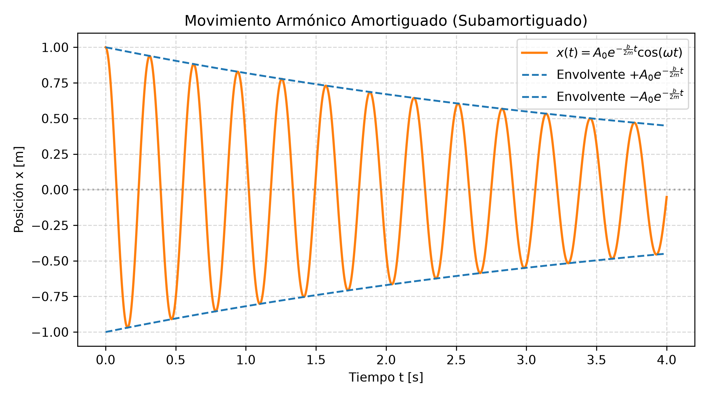
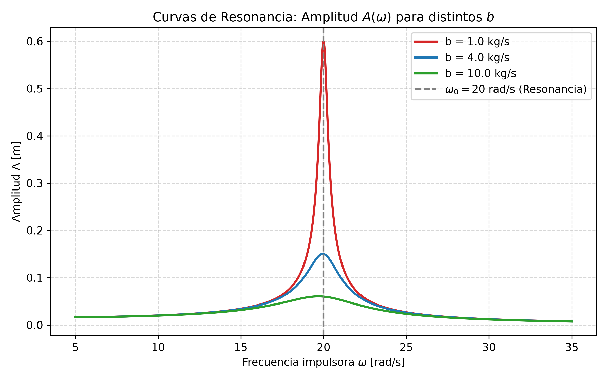

3.4 Oscilaciones Amortiguadas, Forzadas, Resonancia y Superposición
1. La Intuición Física: Sistemas Oscilantes Reales y Complejos
En los temas anteriores analizamos el oscilador ideal (MAS), donde la energía total se conservaba indefinidamente. En los sistemas reales de ingeniería y arquitectura, la fricción y la viscosidad disipan energía continuamente.
- Oscilaciones Amortiguadas: Ocurren cuando actúan fuerzas disipativas (como la resistencia del aire o el rozamiento viscoso de un fluido). La amplitud del movimiento decrece exponencialmente con el tiempo hasta detenerse. Un ejemplo práctico son los amortiguadores de la suspensión de un vehículo.
- Oscilaciones Forzadas: Para evitar que el movimiento muera por amortiguamiento, se aplica una fuerza impulsora externa periódica que inyecta energía al sistema. Un ejemplo simple es empujar rítmicamente a alguien en una hamaca.
- Resonancia: Ocurre cuando la frecuencia de la fuerza impulsora externa (\(\omega\)) coincide exactamente o está muy cerca de la frecuencia natural del sistema (\(\omega_0\)). En ese instante, la transferencia de energía es máxima y la amplitud se dispara drásticamente. Un ejemplo histórico dramático fue el colapso del puente Tacoma Narrows en 1940.
- Superposición de MAS: Cuando un cuerpo se ve sometido a dos o más fuerzas oscilatorias simultáneas, el movimiento resultante es la suma vectorial de los movimientos componentes.
2. Desarrollo Matemático y Expresiones Clave
A. Movimiento Armónico Amortiguado
Considerando una fuerza de rozamiento viscoso proporcional a la velocidad: \(F_R = -b v\) (donde \(b\) es el coeficiente de amortiguamiento en \(\text{kg/s}\) o \(\text{N}\cdot\text{s/m}\)).
Aplicando la Segunda Ley de Newton:
Para amortiguamiento débil (\(b < 2\sqrt{m k}\)), la solución de posición es:
Donde: * Envolvente de la amplitud: \(A(t) = A_0 e^{-\frac{b}{2m}t}\) * Frecuencia angular amortiguada: \(\omega = \sqrt{\omega_0^2 - \left(\frac{b}{2m}\right)^2}\), siendo \(\omega_0 = \sqrt{\frac{k}{m}}\) la frecuencia natural sin amortiguamiento.
B. Oscilaciones Forzadas y Resonancia
Si aplicamos una fuerza impulsora senoidal \(F(t) = F_0 \cos(\omega t)\):
En estado estacionario, el sistema oscila a la frecuencia \(\omega\) de la fuerza impulsora, con una Amplitud (\(A\)) dada por:
Condición de Resonancia:
Cuando \(\omega \approx \omega_0\), el término \((\omega^2 - \omega_0^2)^2 \to 0\), por lo que la amplitud alcanza su valor pico \(A_{\text{máx}} \approx \frac{F_0}{b \omega_0}\).
C. Superposición de dos MAS de la misma Frecuencia
Si una partícula recibe simultáneamente dos oscilaciones en el mismo eje:
\(x_1(t) = A_1 \cos(\omega t + \phi_1)\) y \(x_2(t) = A_2 \cos(\omega t + \phi_2)\).
El movimiento resultante es \(x(t) = x_1(t) + x_2(t) = A \cos(\omega t + \phi)\), donde la amplitud total \(A\) se calcula mediante suma de fasores (vectores rotantes):
3. Detector de Trampas de Parcial
| La Trampa del Profesor | El Error Típico | La Verdad Física |
|---|---|---|
| Frecuencia en Amortiguado: Asumir que oscila a la frecuencia natural \(\omega_0\). | Usar \(\omega = \sqrt{k/m}\) en sistemas con rozamiento. | La fricción ralentiza el movimiento: la frecuencia amortiguada es siempre menor (\(\omega = \sqrt{\omega_0^2 - (b/2m)^2}\)). |
| Exponente de la Envolvente: Olvidar el factor \(2\) en el denominador. | Escribir \(e^{-\frac{b}{m}t}\). | El exponente correcto de la amplitud es \(-\frac{b}{2m}t\). |
| Resonancia Indefinida: Pensar que en la resonancia la amplitud es siempre infinita. | Ignorar el coeficiente de amortiguamiento \(b\). | La amplitud en resonancia solo sería infinita si \(b = 0\). Con rozamiento real (\(b > 0\)), la amplitud máxima es finita (\(A_{\text{máx}} = \frac{F_0}{b \omega_0}\)). |
4. Esquemas Gráficos


5. Ejercicios Resueltos con Análisis Dimensional Explícito
Ejercicio 1: Pérdida de Amplitud en Oscilación Amortiguada
Consigna: Un objeto de masa \(m = 0.25 \text{ kg}\) se conecta a un resorte de \(k = 100 \text{ N/m}\) y se sumerge en un fluido con constante de amortiguamiento \(b = 0.10 \text{ kg/s}\).
a) Calcule el tiempo necesario para que la amplitud se reduzca a la mitad de su valor inicial (\(A(t) = \frac{1}{2} A_0\)).
b) Calcule la frecuencia angular amortiguada \(\omega\).
Desarrollo y Cancelación de Unidades:
Paso a): Tiempo para reducir la amplitud a la mitad (\(t_{1/2}\))
Igualamos la expresión de la envolvente a \(\frac{1}{2} A_0\):
Aplicando logaritmo natural (\(\ln\)) a ambos lados:
Sustituyendo con magnitudes físicas:
Desglose dimensional de unidades:
Operación numérica:
Paso b): Frecuencia angular amortiguada (\(\omega\))
Primero calculamos \(\omega_0^2\) y la constante de atenucación \(\left(\frac{b}{2m}\right)^2\):
Verificación dimensional de \(\frac{k}{m}\):
Ahora calculamos \(\frac{b}{2m}\):
Calculamos \(\omega\):
Conclusión del ejercicio: Como el amortiguamiento es pequeño (\(b\) bajo), la frecuencia angular prácticamente no se altera respecto a la frecuencia natural sin fricción (\(\omega \approx \omega_0 = 20 \text{ rad/s}\)).
Ejercicio 2: Amplitud en Resonancia (Oscilación Forzada)
Consigna: Un motor mecánico de masa \(m = 2.0 \text{ kg}\) sujeto a un soporte de constante \(k = 800 \text{ N/m}\) experimenta una fuerza impulsora periódica de amplitud \(F_0 = 12.0 \text{ N}\). El coeficiente de fricción es \(b = 4.0 \text{ kg/s}\). Calcule la amplitud de movimiento \(A\) cuando la frecuencia impulsora está exactamente en resonancia (\(\omega = \omega_0\)).
Desarrollo y Cancelación de Unidades:
Paso 1: Frecuencia de resonancia (\(\omega_0\))
Paso 2: Amplitud en Resonancia
Como estamos en resonancia exacta (\(\omega = \omega_0\)), el término \((\omega^2 - \omega_0^2)^2 = 0\) en la fórmula general de amplitud:
Sustituyendo magnitudes:
Desglose dimensional de unidades:
Operación numérica: